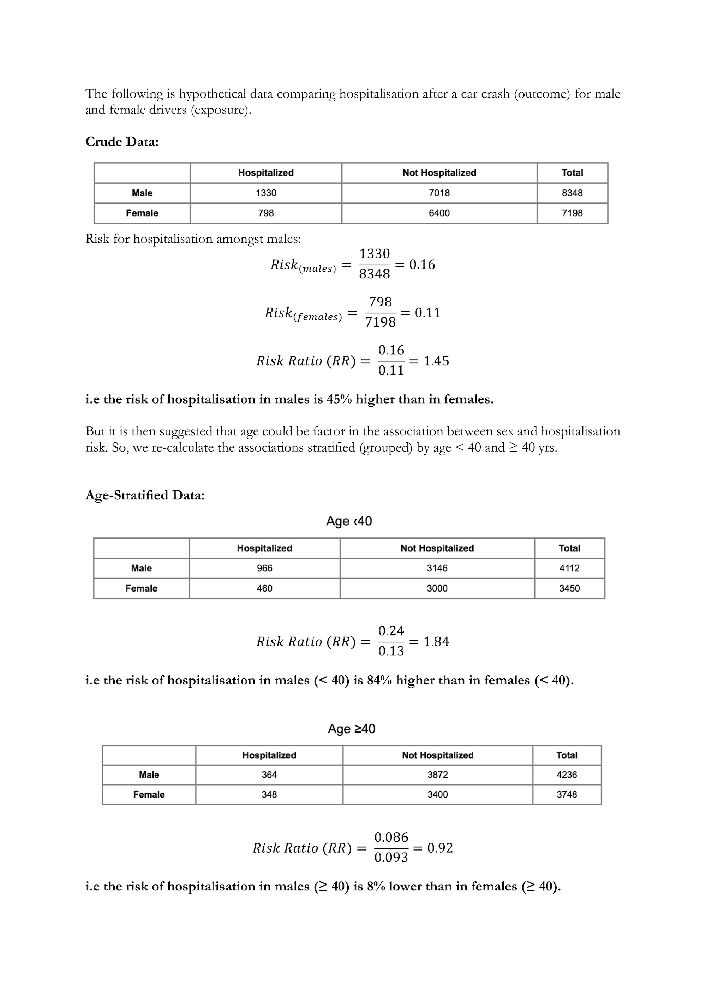
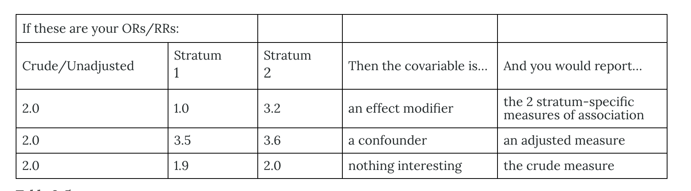

Effect Modification
1 The Question
Recall that the question this week was to choose between:
A) Age is a confounder in the relationship between sex and hospitalisation from car crash.
B) Age is an effect modifier in the relationship between sex and hospitalisation from car crash.
using the data supplied below.

2 The Answer
- The answer is B. Younger male drivers tend to be more stupid and injure themselves more seriously than their female counterparts. Upon reaching a suitable age of maturity their risk of hospitalisation reduces to about the same (if we assume the 95% CI for the 8% reduction includes 0) as that for females.
- When a third variable plays a role in the association between an exposure and an outcome it may act as a confounder OR effect modifier (AND sometimes both).
- A simple confounder (e.g. age) will show the same exposure -> outcome association across all of its categories (e.g. same risk ratio in < 40 yrs and ≥ 40 yrs)
- An effect modifier will show different magnitudes of association across its categories (e.g. the risk ratio will differ in those < 40 yrs and ≥ 40 yrs).
- Stratification is the simplest form of exploring and adjusting for confounding/interaction effects (used before we had all this computing power).
- Subgroups of data are created for each category of confounder/effect modifier and estimates of interest (mean differences, risk ratios, etc) calculated in each.
- These can then be combined in a weighted manner to give an overall (adjusted) estimate if NO effect modification is present.
- This is equivalent to including the third variable as a covariate in our regression model (we now use models rather than stratification methods).
- Simple inclusion in the regression model (using
+in R) FORCES the exposure -> outcome association to be the same across all categories of the effect modifier even if in reality it’s not. +assumes confounding ONLY and NO effect modification.- A problem arises, however, when the third variable is more an effect modifier, rather than confounder.
- If we suspect effect modification is present, we need to include this third variable in the model as an interaction term (using
*in R) - This will allow the exposure -> outcome association to differ across categories of the effect modifier.
*assumes effect modification is present.- This is a more flexible model specification, than simply ‘adjusting’ for a variable.
- Interpretation is a little more involved (always happy to help with this) but the point is it’s important not to blindly assume a third variable can only ever be a confounder.
- If effect modification is present, you need to know about it.
- It is simple to test for effect modification in R, Stata, etc. Include the interaction term and then drop it if not clinically/statistically significant at some level.
- I have included some R output below showing the equivalence of stratification and modelling approaches to interaction effects.
Before we get to that - a simple set of guidelines for how to think about crude vs stratified associations:

Equivalence of model-derived crude estimate
Recall that the aggregated data that the crude estimate is calculated from is:
Code
sex hospitalised not_hospitalised
1 Male 1330 7018
2 Female 798 6400To estimate this model in R we essentially run a logistic regression but instead of outputting an odds ratio, we calculate a risk ratio by specifying a log rather than logit link. We will also use the aggregate model specification, as we don’t have the individual-level data.
The model-derived crude risk ratio for sex = 1.44 (95% CI 1.32, 1.56; p < 0.001). This is very close to the estimate that we initially calculated manually from the 2 x 2 table (1.45).
3 Let’s introduce age (<40 vs ≥ 40) as a third variable
Code
sex age hospitalised not_hospitalised
1 Male < 40 966 3146
2 Female < 40 460 3000
3 Male ≥ 40 364 3872
4 Female ≥ 40 348 34003.1 Age as a confounder
For now, let’s just assume age is a confounder in the association between sex and hospitalisation risk. The model formulation in R is then:
mod_adj <- glm(cbind(hospitalised, not_hospitalised) ~ sex + age, data = dat_agg, family = binomial(link = "log"))
and the risk ratios we get are:
Code
| Characteristic | RR1 | 95% CI1 | p-value |
|---|---|---|---|
| sex | |||
| Female | — | — | |
| Male | 1.43 | 1.32, 1.55 | <0.001 |
| age | |||
| < 40 | — | — | |
| ≥ 40 | 0.47 | 0.43, 0.51 | <0.001 |
| 1 RR = Relative Risk, CI = Confidence Interval | |||
So, what we are seeing here is that the magnitude of association between sex and hospitalisation risk is averaged (in a weighted way) over both categories of age to produce one effect estimate sex = 1.43 (95% CI 1.32, 1.55; p < 0.001). This just so happens to be almost the same as the crude estimate when you ignore age altogether.
The effect for age in this model is such that whatever your sex, there is about a 53% reduction in the risk of hospitalisation if you are over 40 vs under 40. Note that in the stratification approach, you aren’t able to calculate an effect for age because you are stratifying by it (essentially treating it as a nuisance variable).
3.2 Age as an effect modifier
Now, let’s correctly model age as an effect modifier in the association between sex and hospitalisation risk. The model formulation in R is then (note the * operator):
mod_adj <- glm(cbind(hospitalised, not_hospitalised) ~ sex * age, data = dat_agg, family = binomial(link = "log"))
and the risk ratios we get are:
Code
| Characteristic | RR1 | 95% CI1 | p-value |
|---|---|---|---|
| sex | |||
| Female | — | — | |
| Male | 1.77 | 1.60, 1.96 | <0.001 |
| age | |||
| < 40 | — | — | |
| ≥ 40 | 0.70 | 0.61, 0.80 | <0.001 |
| sex * age | |||
| Male * ≥ 40 | 0.52 | 0.44, 0.62 | <0.001 |
| 1 RR = Relative Risk, CI = Confidence Interval | |||
Note how the p value for the interaction term is very low - this would be a good indicator that the model fits the data better with the interaction term present than without it (i.e. assuming age as a confounder only).
As I mentioned earlier, the model interpretation with an interaction present does become a little more complicated, but let’s break this down (note that I use “effect” in a non-causal way):
The coefficient for
sex = 1.77 (95% CI 1.60, 1.96; p < 0.001). The represents the “effect” of sex (being male relative to female) on hospitalisation risk at the reference level of age, which in this case is the under 40 yrs group. So, for those under 40, there is about a77%increased risk for males relative to females.The coefficient for
age = 0.70 (95% CI 0.61, 0.80; p < 0.001). This represents the “effect” of age (being older than 40 yrs relative to younger than 40 yrs) on hospitalisation risk at the reference level of sex, which in this case is female. So, for females, there is about a30%risk reduction in the need for hospitalisation for older relative to younger drivers.The coefficient for the interaction term:
sex * age = 0.52 (95% CI 0.44, 0.62; p < 0.001). This represents the multiplicative increase in the magnitude of association for males over 40 yrs.
4 Effect modification means more associations to estimate
In this specific case, when you treat age as a confounder, the model produces two risk ratios - one for sex and one for age. However, when you treat age as an effect modifier, there are now four possible risk ratios to estimate (if you care about age more than it being a “nuisance” variable to control for). These are:
- The effect of being male in younger individuals.
- The effect of being male in older individuals.
- The effect of being older in females.
- The effect of being older in males.
You can easily enough work these out manually by multiplying the respective reference coefficients with the interaction coefficient. The risk ratios for each of the above would then be:
1.77(we can just read this one straight off the model output)1.77 x 0.52 = 0.920.70(again we can just read this one straight off)0.70 x 0.52 = 0.36
Note that the effects for 1. and 2. are very similar to what we calculated straight from the 2 x 2 tables (1.84 and 0.92, respectively - as previously mentioned, the effects for 3. and 4. aren’t able to be calculated for the stratifying variable).
5 Emmeans should be your new best friend
Perhaps I am preaching to the converted, but if you don’t know what the emmeans package and specific function in R does, then you should learn about it (the equivalent function in Stata is margins).
https://cran.r-project.org/web/packages/emmeans/index.html
https://aosmith.rbind.io/2019/03/25/getting-started-with-emmeans/
emmeans does a lot of things, but perhaps its workhorse function is to allow you to take a model and calculate adjusted predictions (either at set values of covariates, or by ‘averaging’ over them). In this case, we can very easily use emmeans to reproduce the manual calculations we just did.
Code
emmeans(mod_interact, ~ sex + age, type = "response") |>
data.frame() |>
flextable() |>
colformat_double(digits = 3, na_str = "N/A") |>
set_table_properties(layout = "autofit") |>
height(height = 1, unit = "cm") |>
hrule(rule = "atleast", part = "header") |>
align(align = "center", part = "body") |>
flextable::font(fontname = "Consolas", part = "all") |>
theme_vanilla()sex | age | prob | SE | df | asymp.LCL | asymp.UCL |
|---|---|---|---|---|---|---|
Female | < 40 | 0.133 | 0.006 | Inf | 0.122 | 0.145 |
Male | < 40 | 0.235 | 0.007 | Inf | 0.222 | 0.248 |
Female | ≥ 40 | 0.093 | 0.005 | Inf | 0.084 | 0.103 |
Male | ≥ 40 | 0.086 | 0.004 | Inf | 0.078 | 0.095 |
Specifying type = "response" in the emmeans call indicates that we want to calculate the outcome on the probability (i.e. risk) scale. To get the risk ratios we have been working with until now, we simply add the pairs(rev = T) function to the call:
Code
emmeans(mod_interact, ~ sex + age, type = "response") |> pairs(rev = T) |>
data.frame() |>
flextable() |>
colformat_double(digits = 3, na_str = "N/A") |>
set_table_properties(layout = "autofit") |>
height(height = 1, unit = "cm") |>
hrule(rule = "atleast", part = "header") |>
align(align = "center", part = "body") |>
flextable::font(fontname = "Consolas", part = "all") |>
theme_vanilla()contrast | ratio | SE | df | null | z.ratio | p.value |
|---|---|---|---|---|---|---|
Male < 40 / Female < 40 | 1.767 | 0.091 | Inf | 1.000 | 11.003 | 0.000 |
Female ≥ 40 / Female < 40 | 0.698 | 0.047 | Inf | 1.000 | -5.356 | 0.000 |
Female ≥ 40 / Male < 40 | 0.395 | 0.023 | Inf | 1.000 | -15.923 | 0.000 |
Male ≥ 40 / Female < 40 | 0.646 | 0.043 | Inf | 1.000 | -6.582 | 0.000 |
Male ≥ 40 / Male < 40 | 0.366 | 0.021 | Inf | 1.000 | -17.499 | 0.000 |
Male ≥ 40 / Female ≥ 40 | 0.925 | 0.066 | Inf | 1.000 | -1.083 | 0.700 |
Note that this gives us two extra comparisons we might not really want (the 3rd and 4th lines of the output) as it estimates every single pairwise comparison. We can get a bit fancier and customise the emmeans output to give us only what we want:
Code
emm <- emmeans(mod_interact, ~ sex + age, type = "response") # save the estimated risks
custom <- list(`The effect of being male in younger individuals` = c(-1,1,0,0),
`The effect of being male in older individuals` = c(0,0,-1,1),
`The effect of being older in females` = c(-1,0,1,0),
`The effect of being older in males` = c(0,-1,0,1)) # create custom grid of RR's to estimate
contrast(emm, custom) |>
summary(infer = T) |>
data.frame() |>
flextable() |>
colformat_double(digits = 3, na_str = "N/A") |>
set_table_properties(layout = "autofit") |>
height(height = 1, unit = "cm") |>
hrule(rule = "atleast", part = "header") |>
align(align = "center", part = "body") |>
flextable::font(fontname = "Consolas", part = "all") |>
theme_vanilla()contrast | ratio | SE | df | asymp.LCL | asymp.UCL | null | z.ratio | p.value |
|---|---|---|---|---|---|---|---|---|
The effect of being male in younger individuals | 1.767 | 0.091 | Inf | 1.597 | 1.956 | 1.000 | 11.003 | 0.000 |
The effect of being male in older individuals | 0.925 | 0.066 | Inf | 0.804 | 1.065 | 1.000 | -1.083 | 0.279 |
The effect of being older in females | 0.698 | 0.047 | Inf | 0.612 | 0.796 | 1.000 | -5.356 | 0.000 |
The effect of being older in males | 0.366 | 0.021 | Inf | 0.327 | 0.409 | 1.000 | -17.499 | 0.000 |
Note, that these match the manual calculations pretty well.
Please take some time to learn about emmeans (or margins in Stata). It will make your life so much easier if you plan to have a career in research (and don’t always have access to a statistician).